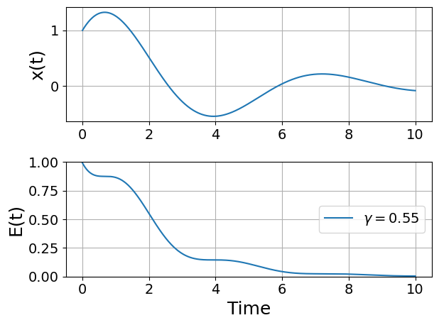
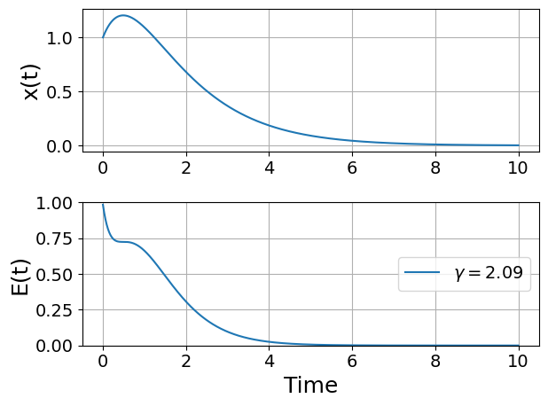
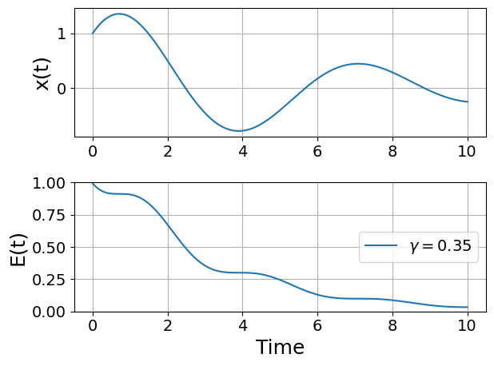
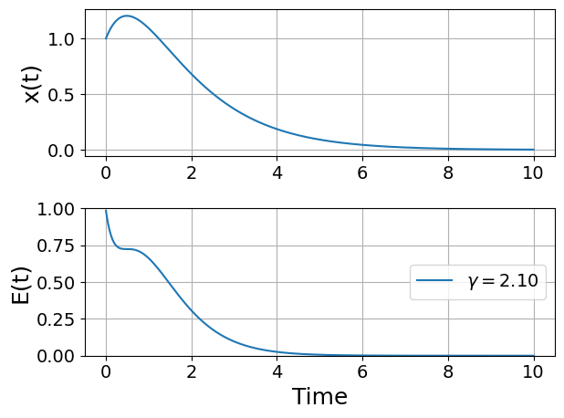

%matplotlib inline
import torch
from pylab import *
import numpy as np
###############################################################################
N = 1000
t = np.linspace(0,10,N)
dt = t[1] - t[0]
###############################################################################
# functions
def integrate(F,x0,v0,gamma):
###########################################################################
# arrays are allocated and filled with zeros
#x = torch.tensor([0.0],requires_grad=True)
#v = torch.zeros(N)
Ef = 0
x = np.zeros(N)
v = np.zeros(N)
E = np.zeros(N)
###########################################################################
# initial conditions
x[0] = x0
v[0] = v0
###########################################################################
# Do the Verlet Integration
fac1 = 1.0 - 0.5*gamma*dt
fac2 = 1.0/(1.0 + 0.5*gamma*dt)
for i in range(N-1):
vn = fac1*fac2*v0 - fac2*dt*x0 + fac2*dt*F[i]
xn = x0 + dt*vn
Ef = 0.5*(x0**2 + ((v0 + vn)/2.0)**2)
v0 = vn
x0 = xn
# For Plotting/Debug
v[i + 1] = vn
x[i + 1] = xn
E[i] = Ef
Ef = 0.5*(x0**2 + v0**2)
E[-1] = Ef
###########################################################################
# return solution
return ( (x0,v0,Ef) , (x,v,E) )8 Demonstration of AD on Verlet Integration
This notebook demonstrates how to use Automatic Differentiation to determine the gradients of the initial conditions of a dynamical system (in this case a damped oscillator). To do this, we will define a numerical routine (Verlet Integration) and then use Automatic Differentiation to back propagate the gradient information from the output (Total system energy) to the initial conditions.
%matplotlib inline
import torch
from pylab import *
import numpy as np
###############################################################################
N = 1000
t = np.linspace(0,10,N)
dt = t[1] - t[0]
###############################################################################
# functions
def integrate(F,x0,v0,gamma):
###########################################################################
# arrays are allocated and filled with zeros
#x = torch.tensor([0.0],requires_grad=True)
#v = torch.zeros(N)
Ef = torch.tensor([0.0],requires_grad=True)
x = np.zeros(N)
v = np.zeros(N)
E = np.zeros(N)
###########################################################################
# initial conditions
with torch.no_grad():
x[0] = x0
v[0] = v0
###########################################################################
# Do the Verlet Integration
fac1 = 1.0 - 0.5*gamma*dt
fac2 = 1.0/(1.0 + 0.5*gamma*dt)
for i in range(N-1):
vn = fac1*fac2*v0 - fac2*dt*x0 + fac2*dt*F[i]
xn = x0 + dt*vn
Ef = 0.5*(x0**2 + ((v0 + vn)/2.0)**2)
v0 = vn
x0 = xn
# For Plotting/Debug
with torch.no_grad():
v[i + 1] = vn
x[i + 1] = xn
E[i] = Ef
Ef = 0.5*(x0**2 + v0**2)
with torch.no_grad():
E[-1] = Ef
###########################################################################
# return solution
return ( (x0,v0,Ef) , (x,v,E) )###############################################################################
# Do the actual numerical integration
F = zeros(N)
x_initial = torch.tensor([1.0], requires_grad = True)
v_initial = torch.tensor([1.0], requires_grad = True)
#gamma = torch.tensor([0.05], requires_grad = True)
gamma = torch.tensor([.05], requires_grad = True)
((xf,vf,Ef),(x1,v1,E1)) = integrate(F,x_initial,v_initial,gamma) # x0 = 0.0, v0 = 1.0, gamma = 0.0#((),(x2,v2,E2)) = integrate(F,0.0,1.0,0.05) # x0 = 0.0, v0 = 1.0, gamma = 0.01
#((),(x2,v2,E2)) = integrate(F,0.0,1.0,0.05) # x0 = 0.0, v0 = 1.0, gamma = 0.01
#((),(x3,v3,E3)) = integrate(F,0.0,1.0,0.4) # x0 = 0.0, v0 = 1.0, gamma = 0.5
###############################################################################
def plot_solution(x1,E1,gamma):
rcParams["axes.grid"] = True
rcParams['font.size'] = 14
rcParams['axes.labelsize'] = 18
figure()
subplot(211)
plot(t,x1)
#plot(t,x2)
#plot(t,x3)
ylabel("x(t)")
subplot(212)
plot(t,E1,label=fr"$\gamma = {float(gamma):.2f}$")
#plot(t,E2,label=r"$\gamma = 0.01$")
#plot(t,E3,label=r"$\gamma = 0.5$")
ylim(0,1.0)
ylabel("E(t)")
xlabel("Time")
legend(loc="center right")
tight_layout()
plot_solution(x1,E1,gamma)
print(Ef)
Ef.backward(retain_graph=True)tensor([0.6137], grad_fn=<MulBackward0>)Now let’s print the gradient of the system Energy with respect to some of the initial conditions:
print(gamma.grad)
print(v_initial.grad)
print(x_initial.grad)tensor([-5.9562])
tensor([0.6026])
tensor([0.6248])print(vf)
vf.backward()tensor([-0.2245], grad_fn=<AddBackward0>)print(gamma.grad)
print(v_initial.grad)
print(x_initial.grad)tensor([-4.7535])
tensor([-0.0437])
tensor([1.0466])8.1 Optimizing the Damping Coefficient via SGD and AD
First let’s just get a visual intuition for how \(\gamma\) affects the final energy:
num_gammas = 30
gamma_plot = np.logspace(-0.5,1.0,num_gammas)
Efs = np.zeros(num_gammas)
for i,g in enumerate(gamma_plot):
((xf,vf,Ef),(x1,v1,E1)) = integrate(F,x_initial,v_initial,g)
Efs[i] = Efsemilogx(gamma_plot,Efs)
xlabel(r'$\gamma$')
ylabel('E Final')Text(0, 0.5, 'E Final')
We can see that there is a pretty flat plateau from around \(\gamma=1\) until around \(\gamma=3\).
Now let’s use our backward mode AD to actually optimize \(\gamma\) directly by calling backward on the output of the final energy of the Verlet integration of the ODE:
# This part is just a helper library for plotting
def plot_optimization(initial_gamma, num_steps, optimizer, opt_kwargs={}):
# Take an initial guess at the optimum:
gamma = torch.tensor([initial_gamma], requires_grad=True)
# Initialize the optimizer
optimizer = optimizer([gamma], **opt_kwargs)
steps = [ ] # Here is where we'll keep track of the steps
# Take num_steps of the optimizer
for i in range(num_steps):
# This function runs an actual optimization step. We wrap it in closure so that optimizers
# that take multiple function calls per step can do so -- e.g., LBFGS.
def closure():
# Get rid of the existing gradients on the tape
optimizer.zero_grad()
# Run the numerical integration -- this is the forward pass through the solver
((xf,vf,Ef),(x1,v1,E1)) = integrate(F,x_initial,v_initial,gamma) # x0 = 0.0, v0 = 1.0, gamma = 0.0
# Compute the backward mode AD pass
Ef.backward()
return Ef
# Now ask the optimizer to take a step
optimizer.step(closure)
# The below part is just for printing/plotting. We call torch.no_grad() here to signify that
# we do not need to track this as part of the gradient operations. That is, these parts will not
# be added to the computational graph or used for backward mode AD.
with torch.no_grad():
#print(gamma)
# Run again just to plot the solution for this gamma
((xf,vf,Ef),(x1,v1,E1)) = integrate(F,x_initial,v_initial,gamma)
#print(Ef)
if num_steps>10 and i%3==0:
plot_solution(x1,E1,gamma)
# Add it to steps so that we can see/plot it later.
steps.append(np.array(gamma.detach().numpy()))
steps = np.array(steps)
return steps8.1.1 ADAM Example
steps_Adam = plot_optimization(0.05, 20,
torch.optim.AdamW,
{'lr':0.5})





8.1.2 SGD Example
steps_SGD = plot_optimization(0.05, 20,
torch.optim.SGD,
{'lr':0.05,'momentum':0.9})





8.1.3 LBFGS Example
(Warning: Per-run solves of LBFGS take a while, so don’t set num_steps too high here)
steps_LBFGS = plot_optimization(0.05, 5,
torch.optim.LBFGS,
{'lr':0.3})8.1.4 Compare the steps taken
semilogx(gamma_plot,Efs)
steps_Adam = steps_Adam.flatten()
plot(steps_Adam,[0.0]*len(steps_Adam),'|', color = 'r', label = 'Adam Steps')
plot(steps_SGD,[0.005]*len(steps_SGD),'|', color = 'g', label = 'SGD Steps')
plot(steps_LBFGS,[0.01]*len(steps_LBFGS),'|', color = 'k', label = 'LBFGS Steps')
xlabel(r'$\gamma$')
ylabel('E Final')
legend()